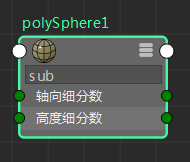

使用“节点编辑器”(Node Editor)中样例下方的过滤器字段来过滤属性。例如，如果要分离出与颜色相关的属性，请键入“col”，系统将仅显示包含字母“col”的属性。
可以通过输入属性长名称或其 UI 名称进行过滤，例如“轴向细分数”或 subdivisionsAxis。
若要在显示和隐藏过滤器字段之间切换，请单击工具栏中的  。在自定义模式（模式 4）下，默认情况下禁用过滤器字段。单击 可显示它。
。在自定义模式（模式 4）下，默认情况下禁用过滤器字段。单击 可显示它。
注： 也可以使用热键 s 在显示和隐藏过滤器字段之间切换。此热键仅适用于节点编辑器，而不适用于 Hypershade。

注： 由于过滤，系统将绘制与隐藏属性的连接，而不绘制与主端口的连接。